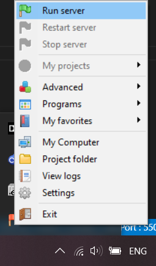
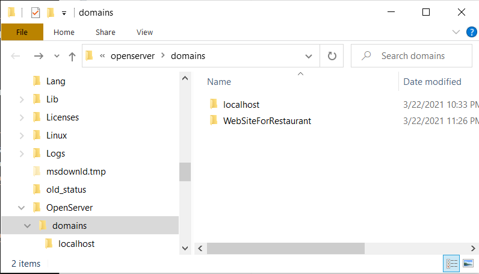
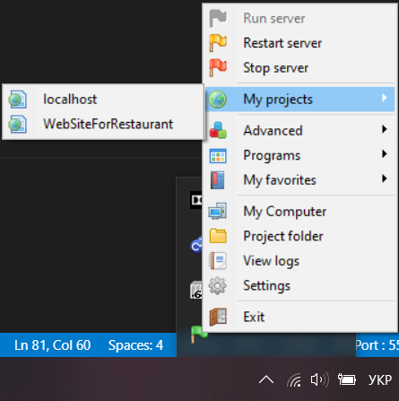

Тема та мета
Лабораторної роботи №6
Динамічні елементи на Jquery
Створення WEB-вузла на комп'ютері
Завантаження документів на сервер
Зміна розширення із .html на .php
Налаштування сервера
Форма зворотнього зв'язку
Висновки
Тема WEB-СЕРВЕРИ ТА ПРИНЦИПИ ЇХ РОБОТИ З КОРИСТУВАЧЕМ. НАЛАШТУВАННЯ WEB-СЕРВЕРУ. СЕРВЕРНІ WEB-ЗАСТОСУВАННЯ.
Мета: придбати практичні навички встановлення та конфігурування WEB-сервера, встановлення та налаштування OpenServer
Даний пункт було виконано у минулій ЛР.
Посилання тут
В якості емулятора сервера на комп'ютері було обрано Open Server. Це просте, потужне та сучасне середовище для розгортання ВЕБ-додатку на локальній машині.
Запустимо Open Server Panel:

Запускаємо сервер:
Сервер працює.
Завантажимо наш сайт на сервер:
Дана зміна відобразилась на сервері:
Перепишемо назви файлів в проєкті із html на php

Бачимо, що все працює коректно

Застосовано наступні налаштування сервера:


Html код

Php код


Приклад роботи із некоректними даними

Приклад роботи із коректними даними